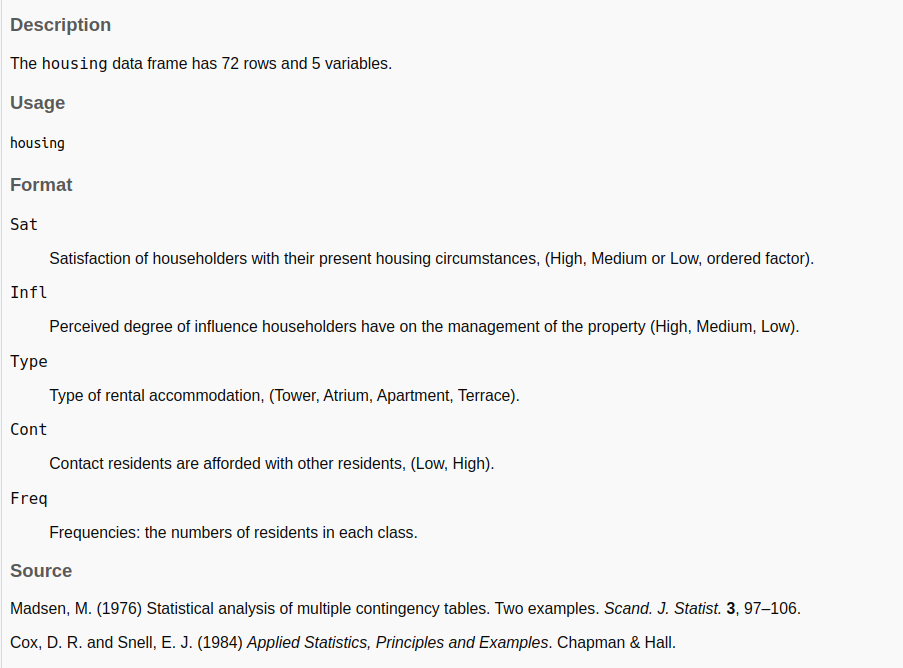

Mostrar / ocultar código
library(tidyverse)
library(MASS)José Luis Cañadas Reche
March 26, 2023
El jueves pasado asistí al más que recomendable meetup de PyData Madrid, que cuenta entre sus organizadores con el gran Juan Luis Cano Rodríguez, antiguo compañero mío de curro y tocayo de iniciales.
El caso es que en una de las charlas, Ignacio Peletier, mencionó de pasada lo del “Conformal Prediction”. Y siendo que Ignacio es un gran científico de datos, y que hacía unos meses que había tenido varias charlas con Carlos sobre el particular, pues he decidido ver un poco más en detalle de qué iba el asunto .
Un excelente sitio para empezar a bichear con este tema es el Readme de este repo, dónde han ido recopilando enlaces a libros, posts, papers y código relativo a lo de conformal prediction.
En particular, uno de los recursos que me ha gustado es este minicurso de Christoph Molnar.
Otro recurso útil es este post de Carlos, dónde se esboza un poco en qué consiste esto de la predicción conforme y en por qué no es algo tan novedoso como se cree.
La predicción conforme se puede aplicar tanto a modelos de regresión de clasificación. Su objetivo es simplemente medir la incertidumbre de una predicción dada.
En el caso de regresión no tiene mucho misterio:
Se entrena un modelo usando un conjunto de datos de entrenamiento.
Se mide el error en un conjunto de datos de validación, calibración, utilizando la norma L1, es decir \(\mid y - \hat{y}\mid\)
Se elige una medida de dispersión del error, por ejemplo el cuantil \((1- \alpha) = 0.95\) de los errores anteriores.
Para una nueva predicción se da su intervalo como \((\hat{y} - q_{1-\alpha}, \hat{y} + q_{1-\alpha})\)
En el caso de clasificación la cosa es más divertida. Puesto que lo que se quiere obtener es un conjunto de etiquetas probables. Tipo {A} {A, B} {B, C}
En este caso según he leído aquí el algoritmo sería
Se entrena un modelo usando un conjunto de datos de entrenamiento.
Se mide el error en un conjunto de datos de validación, calibración, viendo para cada observación el valor que el modelo le ha dado para la predicción de la clase verdadera. Es un conjunto de validación , sabemos cuál es la verdad. Y se calcula el error como \(1- p_{i}\) siendo \(p_i\), la probabilidad predicha para la clase verdadera
Se calcula el cuantil de orden \(1-\alpha\) de esos errores y se guarda. Se entiende que el modelo está bien calibrado y que el conjunto de validación y que los scores que da el modelo se pueden asumir como probabilidades
Para una nueva predicción se tendrá una \(p_i\) para cada clase. Se calcula \(1-p_i\) para cada clase y se considera que esa clase forma parte del prediction set si ese valor es menor o igual que el valor del cuantil anterior.
Pues vamos a ver como se haría con R en estilo compadre, y puede que con alguna pequeña modificación por mi parte.
Vamos a usar el conjunto de datos housing 
| Name | housing |
| Number of rows | 72 |
| Number of columns | 5 |
| _______________________ | |
| Column type frequency: | |
| factor | 4 |
| numeric | 1 |
| ________________________ | |
| Group variables | None |
Variable type: factor
| skim_variable | n_missing | complete_rate | ordered | n_unique | top_counts |
|---|---|---|---|---|---|
| Sat | 0 | 1 | TRUE | 3 | Low: 24, Med: 24, Hig: 24 |
| Infl | 0 | 1 | FALSE | 3 | Low: 24, Med: 24, Hig: 24 |
| Type | 0 | 1 | FALSE | 4 | Tow: 18, Apa: 18, Atr: 18, Ter: 18 |
| Cont | 0 | 1 | FALSE | 2 | Low: 36, Hig: 36 |
Variable type: numeric
| skim_variable | n_missing | complete_rate | mean | sd | p0 | p25 | p50 | p75 | p100 | hist |
|---|---|---|---|---|---|---|---|---|---|---|
| Freq | 0 | 1 | 23.35 | 17.67 | 3 | 10 | 19.5 | 31.75 | 86 | ▇▅▂▁▁ |
Y vamos a justar un modelito tonto usando regresión logística ordinal, sobre los 40 primeros datos
house.plr <- polr(Sat ~ Infl + Type + Cont, weights = Freq, data = housing[1:40,])
head(predict(house.plr, type = "probs"))
#> Low Medium High
#> 1 0.3639420 0.2575531 0.3785049
#> 2 0.3639420 0.2575531 0.3785049
#> 3 0.3639420 0.2575531 0.3785049
#> 4 0.3263764 0.2552793 0.4183443
#> 5 0.3263764 0.2552793 0.4183443
#> 6 0.3263764 0.2552793 0.4183443Guardamos las predicciones para el conjunto de validación , que va a ser las filas de la 41 a la 55, junto con el valor de Sat verdadero
predictions <- as.data.frame(predict(house.plr, type = "probs", newdata = housing[41:55,]))
tt <- cbind(predictions, True_class=housing$Sat[41:55])
tt
#> Low Medium High True_class
#> 41 0.3055662 0.2524868 0.4419471 Medium
#> 42 0.3055662 0.2524868 0.4419471 High
#> 43 0.1595073 0.1930758 0.6474169 Low
#> 44 0.1595073 0.1930758 0.6474169 Medium
#> 45 0.1595073 0.1930758 0.6474169 High
#> 46 0.4671694 0.2484190 0.2844116 Low
#> 47 0.4671694 0.2484190 0.2844116 Medium
#> 48 0.4671694 0.2484190 0.2844116 High
#> 49 0.4260865 0.2544760 0.3194375 Low
#> 50 0.4260865 0.2544760 0.3194375 Medium
#> 51 0.4260865 0.2544760 0.3194375 High
#> 52 0.2425400 0.2363201 0.5211399 Low
#> 53 0.2425400 0.2363201 0.5211399 Medium
#> 54 0.2425400 0.2363201 0.5211399 High
#> 55 0.4014928 0.2566312 0.3418760 LowAhora, para la primera fila sería hacer (1-0.2524), puesto que la clase real es “Medium” y para la segunda sería (1-0.44), puesto que la clase real es “High”. No estoy muy inspirado hoy y no he conseguido una forma elegante de hacerlo en R, y ChatGpt no me ha servido de mucha ayuda, seguramente porque aún no soy muy ducho preguntándole.
Así que he tirado iterando para cada fila con un map y quedándode con el valor predicho de la columna cuyo nombre coincida con el valor en True_class
tt$prob_true_class <- map_dbl(1:nrow(tt), .f = function(i)
tt[i, colnames(tt) == tt$True_class[i]])
tt$resid <- 1-tt$prob_true_class
head(tt)
#> Low Medium High True_class prob_true_class resid
#> 41 0.3055662 0.2524868 0.4419471 Medium 0.2524868 0.7475132
#> 42 0.3055662 0.2524868 0.4419471 High 0.4419471 0.5580529
#> 43 0.1595073 0.1930758 0.6474169 Low 0.1595073 0.8404927
#> 44 0.1595073 0.1930758 0.6474169 Medium 0.1930758 0.8069242
#> 45 0.1595073 0.1930758 0.6474169 High 0.6474169 0.3525831
#> 46 0.4671694 0.2484190 0.2844116 Low 0.4671694 0.5328306Definimos un \(\alpha = 0.3\) y calculamos el cuantil 70 .
Y ya estamos listos para hacer la predicción conforme para nuevos datos.
# predecimos de la fila 51 a la 70
predicciones <- predict(house.plr, newdata = housing[51:70,], type = "probs")
head(predicciones)
#> Low Medium High
#> 51 0.4260865 0.2544760 0.3194375
#> 52 0.2425400 0.2363201 0.5211399
#> 53 0.2425400 0.2363201 0.5211399
#> 54 0.2425400 0.2363201 0.5211399
#> 55 0.4014928 0.2566312 0.3418760
#> 56 0.4014928 0.2566312 0.3418760Nos creamos un data.frame que indique si el valor de 1 - predicciones es menor o igual que el cuantil elegido
Al igual que antes, utilizo un map para obtener el conjunto de etiquetas, para la primera fila serían todas, para la segunda sería {“Medium”, “High”}
set$conformal <- map_chr(1:nrow(set), .f= function(i) {
set_list = colnames(set)[unlist(set[i,])]
paste0(set_list, collapse = ",")
})
head(set)
#> Low Medium High conformal
#> 51 TRUE TRUE TRUE Low,Medium,High
#> 52 FALSE FALSE TRUE High
#> 53 FALSE FALSE TRUE High
#> 54 FALSE FALSE TRUE High
#> 55 TRUE TRUE TRUE Low,Medium,High
#> 56 TRUE TRUE TRUE Low,Medium,HighSe lo pego al dataset original de test (filas 51 a 70), junto con las predicciones y la clase verdadera.
set_fin <- cbind( True_class = housing$Sat[51:70], as.data.frame(predicciones),
set_conformal =set$conformal)
head(set_fin)
#> True_class Low Medium High set_conformal
#> 51 High 0.4260865 0.2544760 0.3194375 Low,Medium,High
#> 52 Low 0.2425400 0.2363201 0.5211399 High
#> 53 Medium 0.2425400 0.2363201 0.5211399 High
#> 54 High 0.2425400 0.2363201 0.5211399 High
#> 55 Low 0.4014928 0.2566312 0.3418760 Low,Medium,High
#> 56 Medium 0.4014928 0.2566312 0.3418760 Low,Medium,HighY ya estaría.
Una cosa que se suele calcular es la cobertura de cada clase, es decir, la proporción de veces que cada clase está dentro del conjunto.
set_fin <- set_fin |>
mutate(
class_in_set = map2_lgl(.x = True_class,
.y = set_conformal ,
~ .x %in% unlist(str_split(.y,",")))
)
head(set_fin)
#> True_class Low Medium High set_conformal class_in_set
#> 51 High 0.4260865 0.2544760 0.3194375 Low,Medium,High TRUE
#> 52 Low 0.2425400 0.2363201 0.5211399 High FALSE
#> 53 Medium 0.2425400 0.2363201 0.5211399 High FALSE
#> 54 High 0.2425400 0.2363201 0.5211399 High TRUE
#> 55 Low 0.4014928 0.2566312 0.3418760 Low,Medium,High TRUE
#> 56 Medium 0.4014928 0.2566312 0.3418760 Low,Medium,High TRUENo me convence lo de tener un sólo cuantil, común a todas las clases, ¿no sería mejor tener una medida de cómo se distribuyen los errores para cada una de las clases?
Usamos el conjunto de validación dónde tenemos el \(1-p_i\) que nos dice en cuánto se ha equivocado el modelo en predecir la clase real
head(tt)
#> Low Medium High True_class prob_true_class resid
#> 41 0.3055662 0.2524868 0.4419471 Medium 0.2524868 0.7475132
#> 42 0.3055662 0.2524868 0.4419471 High 0.4419471 0.5580529
#> 43 0.1595073 0.1930758 0.6474169 Low 0.1595073 0.8404927
#> 44 0.1595073 0.1930758 0.6474169 Medium 0.1930758 0.8069242
#> 45 0.1595073 0.1930758 0.6474169 High 0.6474169 0.3525831
#> 46 0.4671694 0.2484190 0.2844116 Low 0.4671694 0.5328306Calculamos el quantil 70 para cada clase, y así vemos que varía por clase
predicciones <- predict(house.plr, newdata = housing[51:70,], type = "probs")
complementarios <- 1-predicciones
head(complementarios)
#> Low Medium High
#> 51 0.5739135 0.7455240 0.6805625
#> 52 0.7574600 0.7636799 0.4788601
#> 53 0.7574600 0.7636799 0.4788601
#> 54 0.7574600 0.7636799 0.4788601
#> 55 0.5985072 0.7433688 0.6581240
#> 56 0.5985072 0.7433688 0.6581240Y vemos si cada \(1-p_i\) es menor o igual que el cuantil correspondiente de cada clase
set_adjust <- data.frame(Low = complementarios[,1] <= qhat_by_class$Low,
Medium = complementarios[,2] <= qhat_by_class$Medium,
High = complementarios[,3] <= qhat_by_class$High )
head(set_adjust)
#> Low Medium High
#> 51 TRUE TRUE FALSE
#> 52 FALSE FALSE TRUE
#> 53 FALSE FALSE TRUE
#> 54 FALSE FALSE TRUE
#> 55 TRUE TRUE FALSE
#> 56 TRUE TRUE FALSEset_adjust$conformal <- map_chr(1:nrow(set_adjust), .f= function(i) {
set_list = colnames(set_adjust)[unlist(set_adjust[i,])]
paste0(set_list, collapse = ",")
})
head(set_adjust)
#> Low Medium High conformal
#> 51 TRUE TRUE FALSE Low,Medium
#> 52 FALSE FALSE TRUE High
#> 53 FALSE FALSE TRUE High
#> 54 FALSE FALSE TRUE High
#> 55 TRUE TRUE FALSE Low,Medium
#> 56 TRUE TRUE FALSE Low,MediumComo antes, nos quedamos con la clase de verdad, la predicción en probabilidad de cada clase y la predicción conforme
set_adjust_fin <- cbind( True_class = housing$Sat[51:70], as.data.frame(predict(house.plr, newdata = housing[51:70,],type="probs")),
set_conformal =set_adjust$conformal)
head(set_adjust_fin)
#> True_class Low Medium High set_conformal
#> 51 High 0.4260865 0.2544760 0.3194375 Low,Medium
#> 52 Low 0.2425400 0.2363201 0.5211399 High
#> 53 Medium 0.2425400 0.2363201 0.5211399 High
#> 54 High 0.2425400 0.2363201 0.5211399 High
#> 55 Low 0.4014928 0.2566312 0.3418760 Low,Medium
#> 56 Medium 0.4014928 0.2566312 0.3418760 Low,Mediumset_adjust_fin <- set_adjust_fin |>
mutate(
class_in_set = map2_lgl(.x = True_class,
.y = set_conformal ,
~ .x %in% unlist(str_split(.y,",")))
)
set_adjust_fin
#> True_class Low Medium High set_conformal class_in_set
#> 51 High 0.4260865 0.2544760 0.3194375 Low,Medium FALSE
#> 52 Low 0.2425400 0.2363201 0.5211399 High FALSE
#> 53 Medium 0.2425400 0.2363201 0.5211399 High FALSE
#> 54 High 0.2425400 0.2363201 0.5211399 High TRUE
#> 55 Low 0.4014928 0.2566312 0.3418760 Low,Medium TRUE
#> 56 Medium 0.4014928 0.2566312 0.3418760 Low,Medium TRUE
#> 57 High 0.4014928 0.2566312 0.3418760 Low,Medium FALSE
#> 58 Low 0.3622588 0.2575226 0.3802186 Low,Medium,High TRUE
#> 59 Medium 0.3622588 0.2575226 0.3802186 Low,Medium,High TRUE
#> 60 High 0.3622588 0.2575226 0.3802186 Low,Medium,High TRUE
#> 61 Low 0.1967801 0.2160332 0.5871868 High FALSE
#> 62 Medium 0.1967801 0.2160332 0.5871868 High FALSE
#> 63 High 0.1967801 0.2160332 0.5871868 High TRUE
#> 64 Low 0.4732214 0.2472855 0.2794931 Low,Medium TRUE
#> 65 Medium 0.4732214 0.2472855 0.2794931 Low,Medium TRUE
#> 66 High 0.4732214 0.2472855 0.2794931 Low,Medium FALSE
#> 67 Low 0.4320378 0.2537829 0.3141793 Low,Medium TRUE
#> 68 Medium 0.4320378 0.2537829 0.3141793 Low,Medium TRUE
#> 69 High 0.4320378 0.2537829 0.3141793 Low,Medium FALSE
#> 70 Low 0.2470311 0.2378946 0.5150743 High FALSEY aquí ya vemos que la cobertura es distinta y que la clase “High” ya no está en el 100% de los prediction sets
De hecho si tabulamos ambas predicciones conformes , vemos que de las 10 predicciones que el primer método ponía como {Low, Medium, High} , el segundo pone 7 como {Low, Medium } y 3 como {Low, Medium, High}
Vale, todo esto está muy bien, pero ¿y si simplemente para cada observación ordeno de forma decreciente su probabilidad predicha y me quedo con las clases que lleguen al 60% de probabilidad, por ejemplo?
(predicciones_df <- as.data.frame(predicciones ))
#> Low Medium High
#> 51 0.4260865 0.2544760 0.3194375
#> 52 0.2425400 0.2363201 0.5211399
#> 53 0.2425400 0.2363201 0.5211399
#> 54 0.2425400 0.2363201 0.5211399
#> 55 0.4014928 0.2566312 0.3418760
#> 56 0.4014928 0.2566312 0.3418760
#> 57 0.4014928 0.2566312 0.3418760
#> 58 0.3622588 0.2575226 0.3802186
#> 59 0.3622588 0.2575226 0.3802186
#> 60 0.3622588 0.2575226 0.3802186
#> 61 0.1967801 0.2160332 0.5871868
#> 62 0.1967801 0.2160332 0.5871868
#> 63 0.1967801 0.2160332 0.5871868
#> 64 0.4732214 0.2472855 0.2794931
#> 65 0.4732214 0.2472855 0.2794931
#> 66 0.4732214 0.2472855 0.2794931
#> 67 0.4320378 0.2537829 0.3141793
#> 68 0.4320378 0.2537829 0.3141793
#> 69 0.4320378 0.2537829 0.3141793
#> 70 0.2470311 0.2378946 0.5150743modificacion_2 <- predicciones_df |>
rownames_to_column(var = "individuo") |>
pivot_longer(cols = Low:High) |>
group_by(individuo) |>
arrange( desc(value)) |>
mutate(suma_acumulada = cumsum(value)) |>
arrange(individuo)
head(modificacion_2, 10)
#> # A tibble: 10 × 4
#> # Groups: individuo [4]
#> individuo name value suma_acumulada
#> <chr> <chr> <dbl> <dbl>
#> 1 51 Low 0.426 0.426
#> 2 51 High 0.319 0.746
#> 3 51 Medium 0.254 1
#> 4 52 High 0.521 0.521
#> 5 52 Low 0.243 0.764
#> 6 52 Medium 0.236 1
#> 7 53 High 0.521 0.521
#> 8 53 Low 0.243 0.764
#> 9 53 Medium 0.236 1
#> 10 54 High 0.521 0.521Uhmm, pero no me acaba de convencer ordenar de forma descendente por la probabilidad predicha de cada clase. Por ejemplo para el individuo 51, si tomo Low +High llegaría a 0.74, pero si tomo Low + Medium llego al 67% . Si quisiera el menor conjunto de etiquetas que lleguen como mínimo al 60% la opción buena sería Low + Medium para ese individuo.
No me veo con ganas de implementar todas las posibles sumas de probabilidades estimadas y elegir el conjunto que cumpla la restricción de llegar al menos al 60% y si hay varios para mismo individuos que se quede con el conjunto más pequeño.
Lo de la predicción conforme para el caso de regresión me parece bastante sencillo, no es más que sumar y restar una medida de dispersión de los residuos a la predicción para nuevos datos.
Para clasificación es un poco más interesante, sobre todo para casos en los que el usuario quiere una etiqueta o etiquetas y no se conforma con las probabilidades predichas de cada clase.
Subyace la hipótesis de que los scores del modelo están bien calibrados y reflejan la verdadera probabilidad.
Pues nada más, tengan un feliz día.